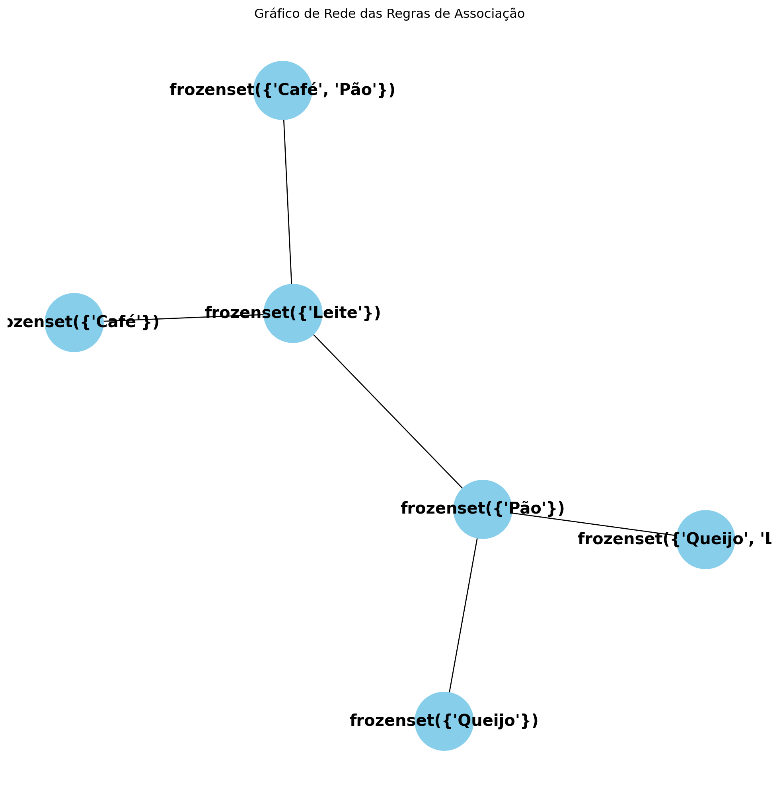

Análise de Cesta de Compras: Revelando Padrões de Consumo com Python
Descubra como a análise de cesta de compras com Python pode revelar padrões de consumo e otimizar as operações no varejo. Aprenda a usar o algoritmo Apriori para identificar produtos frequentemente comprados juntos e aumentar as vendas através de promoções eficazes.
Análise de Dados
Análise de Vendas
Varejo e Atacado
Autor
Janderson B Abreu
Data de Publicação
22 de outubro de 2024
1. Introdução: Decodificando o Comportamento do Consumidor
A análise de cesta de compras é uma técnica poderosa utilizada por varejistas para entender as preferências dos consumidores. Esta abordagem permite que as empresas decifrem o comportamento do cliente e revelem padrões de consumo que podem ser cruciais para o sucesso no competitivo mundo do varejo. Como afirma Groceryshop (2020)1 , “conhecer o que os clientes compram em conjunto é essencial para maximizar a receita e aprimorar a experiência de compra”. Compreender o que os consumidores estão comprando em conjunto possibilita aos varejistas otimizar o sortimento de produtos, ajustar estratégias de precificação e criar promoções mais eficazes. A análise de cesta de compras não apenas ajuda a aumentar as vendas, mas também melhora a fidelização do cliente, já que oferece uma experiência de compra mais personalizada e alinhada com as suas necessidades.
Assim, a análise de cesta de compras se torna uma ferramenta indispensável para qualquer varejista que deseja se destacar em um mercado cada vez mais exigente.
2. Regras de Associação e o Algoritmo Apriori
O que são Regras de Associação?
As regras de associação são uma técnica utilizada na mineração de dados para descobrir relações entre produtos comprados em conjunto. Essas regras ajudam a identificar padrões de compra que podem não ser imediatamente evidentes apenas pela análise dos dados brutos. Por exemplo, um varejista pode descobrir que quando um cliente compra pão, ele frequentemente também compra manteiga, o que pode influenciar promoções e organização de produtos na loja.
O Algoritmo Apriori
O algoritmo Apriori é uma das ferramentas mais populares para encontrar padrões frequentes em grandes conjuntos de dados de transações. Ele utiliza um método iterativo para identificar combinações de itens que aparecem com frequência em cestas de compras. O algoritmo é baseado no princípio de que se um item é comum em uma cesta de compras, então todos os subconjuntos de itens associados também devem ser frequentes.
Implementação do Algoritmo Apriori em Python
Para implementar o algoritmo Apriori em Python, utilizamos a biblioteca Mlxtend4 . Veja um exemplo prático:
/home/janderscience/Projeto/site/Datacado/env/lib/python3.12/site-packages/mlxtend/frequent_patterns/fpcommon.py:109: DeprecationWarning:
DataFrames with non-bool types result in worse computationalperformance and their support might be discontinued in the future.Please use a DataFrame with bool type
Neste código, transformamos os dados de transações em um formato adequado para análise, aplicamos o algoritmo Apriori para encontrar conjuntos frequentes e extraímos regras de associação baseadas em uma métrica de elevação (lift).
3. Encontrando Insights e Oportunidades de Negócios
Após aplicar o algoritmo Apriori, a próxima etapa é analisar os resultados para identificar produtos frequentemente comprados juntos. Os insights obtidos podem ser extremamente valiosos para os varejistas. Por exemplo, ao descobrir que fraldas e cerveja são frequentemente compradas juntas, os varejistas podem criar promoções cruzadas para estimular as vendas. Além disso, esses insights podem ser usados para otimizar o layout da loja , posicionando produtos que se complementam próximos uns dos outros, facilitando a compra pelo cliente.
Exemplos de Aplicações Práticas
Promoções Cruzadas : Compre um pacote de fraldas e leve um desconto na compra de cerveja.
Otimização do Layout : Posicionar fraldas e produtos de higiene ao lado de itens para festas e bebidas, aumentando a probabilidade de compras impulsivas.
4. Visualização de Dados para Melhor Compreensão
A visualização de dados desempenha um papel crucial na interpretação dos resultados da análise de cesta de compras. Ferramentas de visualização ajudam os varejistas a entender melhor as relações entre produtos e a comunicar esses insights de forma clara e intuitiva.
Usando Bibliotecas Python para Visualização
Bibliotecas como NetworkX e Plotly permitem criar representações visuais dos dados de associação, tornando os padrões de consumo mais evidentes. Saiba mais sobre o NetworkXaqui
Exemplo de Visualização com NetworkX
import matplotlib.pyplot as pltimport networkx as nx# Criar um gráfico de redeG = nx.from_pandas_edgelist(regras, source='antecedents', target='consequents', edge_attr='lift')# Desenhar o gráficoplt.figure(figsize=(10, 10))nx.draw(G, with_labels=True, node_size=3000, node_color='skyblue', font_size=15, font_weight='bold')plt.title('Gráfico de Rede das Regras de Associação')plt.show()

Neste exemplo, usamos o NetworkX para visualizar as regras de associação, onde cada nó representa um produto e as arestas representam a relação entre eles, ponderada pela métrica de lift. Essa visualização ajuda a identificar rapidamente quais produtos estão mais interconectados e podem ser alvo de estratégias de marketing.
5. Conclusão
A análise de cesta de compras é uma ferramenta poderosa para entender o comportamento do consumidor e otimizar as operações de varejo. Ao aplicar técnicas de regras de associação, como o algoritmo Apriori, os varejistas podem identificar padrões de compra e encontrar novas oportunidades de negócios. Os insights obtidos a partir dessa análise não só ajudam a melhorar as estratégias de marketing, mas também contribuem para uma melhor experiência do cliente, uma vez que promovem uma personalização que pode aumentar a fidelidade do consumidor. Conforme mencionado por Wang et al. (2018)2 , “a capacidade de interpretar dados de transações pode transformar a maneira como as empresas se conectam com seus clientes”. Portanto, investir na análise de cesta de compras deve ser uma prioridade para os varejistas que buscam não apenas aumentar as vendas, mas também construir relacionamentos mais fortes com seus clientes.
Referências
Groceryshop. (2020). The Importance of Basket Analysis in Retail. Disponível em groceryshop.com .
Wang, Y., Gunasekaran, A., & Ngai, E. W. T. (2018). Big Data in Logistics and Supply Chain Management: Future Directions and the Role of the Researcher. International Journal of Production Economics, 176, 98-110.
imagens pexels
Mlxtend Documentation. Disponível em mlxtend.readthedocs.io.
Como citar este artigo
Se você deseja citar este artigo, pode usar o BibTeX abaixo:
```{bibtex}
@article{abreu2024otimizando, title={Otimizando a Gestão de Preços no Varejo com Python}, author={Abreu, Janderson Batista}, year={2024}, url={https://jandersolutions.github.io/jandersolutions/posts/Otimizando%20a%20Gest%C3%A3o%20de%20Pre%C3%A7os%20no%20Varejo%20com%20Python/}, note={Acesso em: 24 out. 2024}, institution={Anhanguera Educacional}, keywords={ciência de dados, otimização de preços, varejo, Python} }